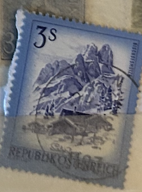
| SOURCE | TITLE| IMAGE MATCH | click to source page |
| eBay | AUSTRIA stamp 1974 3s Scott#963 Salzburg R60 used | eBay |  |
| eBay | Austria #963 MNH | eBay | 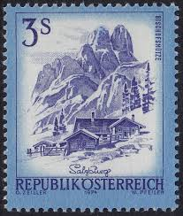 |
| HipStamp | Austria 963: 3s Bischofsmutze im Dachsteinmassiv, Salzburg, used, F-VF | Europe - Belgium & Colonies, General Issue Stamp / HipStamp | 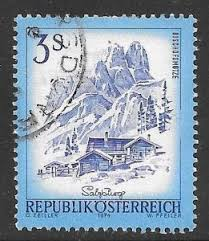 |
| HipStamp | Stamps Are Friends / HipStamp |  |
| Colnect | Stamp: Bischofsmütze im Dachsteinmassiv, Salzburg (Austria(Beautiful Austria) Mi:AT 1596,Sn:AT 1102,Yt:AT 1423,Sg:AT 1690,AFA:AT 1488,ANK:AT 1627,Un:AT 1423 📮 | 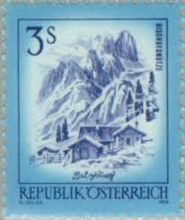 |
| vividagallery.com | Bischofsmutze Dachstein Austrian Alps Mountain Peak Salzburg Alp Canvas Print by Vivida Gallery - Vivida Gallery | 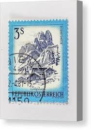 |
| sellosmundo.com | Sellos de Austria de Germán Castro Besnier. Coleccionista de sellos del Mundo. |  |
| Bob Shop | Austria - Austria Used 1946 U.S.S.R-Austria Friendship Congrees 1947 Postage Stamps of 1945-1947 Surcharged Ne was listed for 10.00 on 3 May at 05:31 by DeonRickTraders in Pretoria / Tshwane (ID:640039541) |  |
| BalkanAuction | Postage stamps | Philately | Collectibles | BalkanAuction |  |
| Ness Stamps | Inverness |  | |
| Shutterstock | Collections by Kiev.Victor | Shutterstock Contributor |  |
| Osta.ee | Austria 1974, linnad: Salzburg, arhitektuur, templiga (194885951) - Osta.ee |  |
| さくらのレンタルサーバ | 植村直己 | 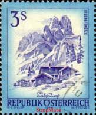 |
| Ballpoint pen of an Austrian stamp : r/drawing | 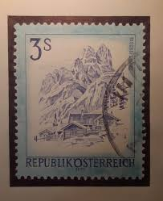 | |
| Alamy | Austria Postage Stamp - Salzburg Stock Photo - Alamy |  |
| Shutterstock | Ankara Türkiye 06152023 Austria Postage Stamp Stock Photo 2317819621 | Shutterstock | 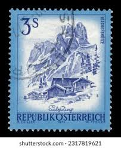 |
| eBay | Österreichische Briefmarken (1970-1979) mit Briefstück online kaufen | eBay |  |
| Osta.ee | Austria 1974.a. Standartmark. Templiga. (225846135) - Osta.ee | 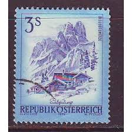 |
| BalkanAuction | Συλλεκτικά | BalkanAuction |  |
| iStock | Austrian Postage Stamp Illustrating Snowy Mountains And Rustic Villa Bluetones Stock Photo - Download Image Now - iStock |  |
| Shutterstock | Row Pink Primrose Flowers Leaves Isolated Stock Footage Video (100% Royalty-free) 1010933378 | Shutterstock |  |
| eBay | FREE SHIP Austria Definitive Beautiful 1978 House Mountain Salzburg (stamp) MNH | eBay Australia | 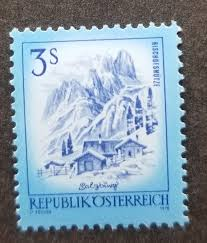 |
| Osta.ee | 29-22 varia austria (247487844) - Osta.ee | 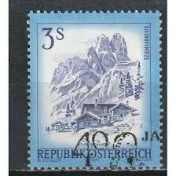 |
| ebid.net | SEYCHELLES 1912 KG5 2c MINT MH SG21 21 SG on eBid Denmark | 225060270 |  |
| Shutterstock | 421 Salzburg Stamps Royalty-Free Images, Stock Photos & Pictures | Shutterstock |  |
| Shutterstock | 11 Bishofsmutze Royalty-Free Images, Stock Photos & Pictures | Shutterstock |  |
| Dreamstime.com | Salzburg Postmark editorial photography. Image of stamp - 385384982 | 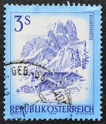 |
| eBay | 1974 Republik Osterreich 3 Schilling Austria/Austrian Postage Stamp | eBay | 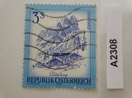 |
| Osta | Austria. Arhidektuur 1974 a. (195675283) - Osta.ee |  |
| Мешок | монета европа 3 крейцера 1680 Зальцбург Австрия» на Мешке |  |
| esam.ir | تک تمبر زیبای خارجی |  |
| Free | La zone des timbres : comment trouver le pays d'un timbre |  |
| allnumis.com | 3 Schilling 1974 - Bischofsmütze im Dachsteinmassiv, Salzburg, Landscape - Austria - Stamp - 46856 |  |
| iStock | Austria Stamps Bishops Cap Scenery Salzburg From The Series Sights In Austria Illustration Stock Photo - Download Image Now - iStock |  |
| Violity | Austria 1974 3S Bischofmutze, Republik Osterrich (1) (122584053) - купити Violity | 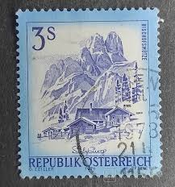 |
| Rakuten | Osterreich Timbres pas cher - Meilleures offres sur le neuf et l'occasion |  |
| Osta.ee | Leiunurk 1-231 Varia (247637009) - Osta.ee | 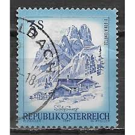 |
| Todocolección | osterreich austria 20 heller daily año 1920... - Buy Antique stamps of Austria on todocoleccion |  |
| Ay.by | Почтовые марки, продать, купить почтовые марки в Минске - Аукционы Беларуси - Ay.by. Страница 9958 |  |
| satura-shop.com | 1596 II Schönes Österreich 3 S Republik Österreich |  |
| Todocolección | so) austria, airplane, luposta vienna 1961 - Buy Antique stamps of Austria on todocoleccion |  |
| eBay | Austria 1974 3s BISCHOFSMUTZE, SALZBURG SC 963 MNH | eBay |  |
| ebid.net | Retro Bengal Midwinter Marquis Of Queensbury Design Sugar Bowl A/F on eBid United Kingdom | 177881511 |  |
| philaforum.com | Ferienland-Satz - Österreich ab 1945 - PHILAFORUM.COM Briefmarkenforum |  |
| Ay.by | Почтовые марки Австрии - купить, продать на Аукционах Ay.by. Страница 40 |  |
| Violity | Austria 1974 3S Bischofmutze, Republik Osterrich (9) (122584074) - купити Violity | 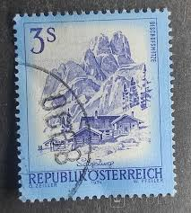 |
| Dorotheum | Österr. - Mi Nr. 1442F (3S Schönes Österr. OHNE HELLKOBALTEM RASTERTIEFDRUCK -RAHMEN), - Briefmarken und Ansichtskarten 25.08.2025 - Erzielter Preis: EUR 150 - Dorotheum |  |
| eBay | AUSTRIA 1102 - Landscapes "Bischofsmutze, Salzburg" (pb80274) | eBay | 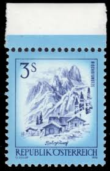 |
| Galéria Savaria | Gyűjtemény - Bélyeg - Eladott termékek | Galéria Savaria online piactér - Vásároljon vagy hirdessen megbízható, színvonalas felületen! |  |
| eBay UK | Austria 1974 view definitive bischofsmutze and alpine farm 3s used sg1680 | eBay UK |  |
| Osta.ee | Austria 1974.a. Standartmark. Templiga. (225846135) - Osta.ee | 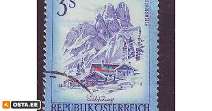 |
| esam.ir | تمبر کلاسیک ارزشمند اتریش | 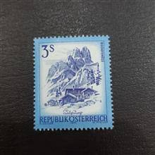 |
| eBay | 3 Schilling, Österreich, Briefmarke | eBay | 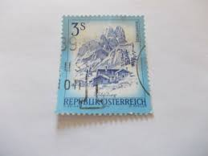 |
| eBay | 1978 Austria Stamps (Set of 2) - Used - Colorful Landscapes | eBay |  |
| Bob Shop | Austria - Austria - 1974 Austrian Landscapes 3S used was listed for 1.20 on 14 Jul at 18:16 by petersbooks in South Africa (ID:647830678) |  |
| Colnect | Stamp: Lindauer Hütte im Rätikon, Vorarlberg (Austria(Beautiful Austria) Mi:AT 1477,Sn:AT 967,Yt:AT 1305,Sg:AT 1684,AFA:AT 1386,ANK:AT 1592,Un:AT 1305 📮 |  |
| Shutterstock | October 6 2025 Jakarta Indonesia Postage Stock Photo 2697071713 | Shutterstock |  |
| eBay | AUSTRIA #960, 2,3 10sh Stamp Booklet, VF, Michel $25.00 | eBay | 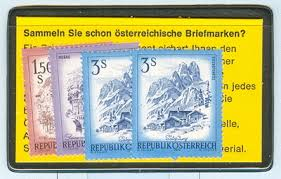 |
| Dorotheum | Österr. Nr. 1592 (6S Schönes Österreich) OHNE LILAROTEM RASTERTIEFDRUCK (RAHMEN), - Briefmarken 2024/06/13 - Starting bid: EUR 150 - Dorotheum |  |